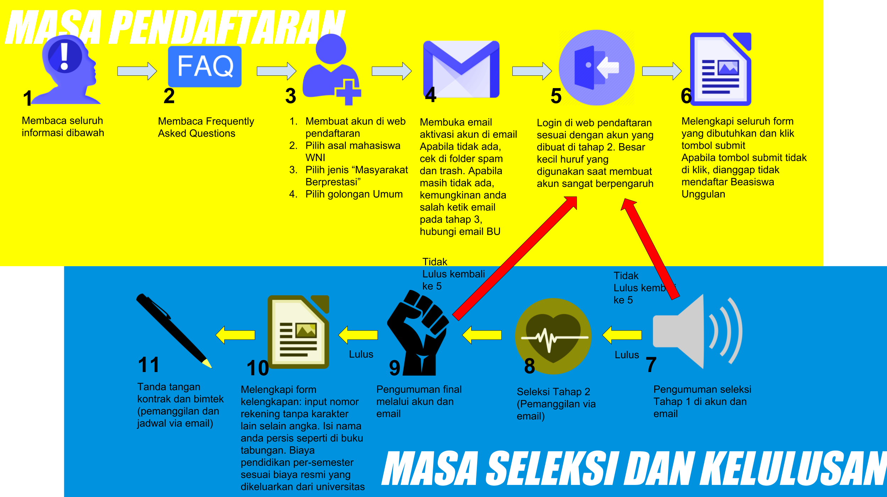

Beasiswa Unggulan 3T
FAQ
DOWNLOAD FLYER
Beasiswa Unggulan 3T merupakan beasiswa yang diperuntukan bagi siswa yang berasal dari daerah 3T sesuai dengan Peraturan Presiden Republik Indonesia Nomor 131 Tahun 2015 Tentang Penetapan Daerah Tertinggal Tahun 2015-2019. (Daftar Daerah 3T).
Beasiswa Unggulan 3T dipergunakan untuk melanjutkan studi pada jenjang pendidikan Sarjana (S1), Magister (S2), dan/atau Doktor (S3) pada perguruan tinggi dengan akreditasi minimal B.
PROGRAM PRIORITAS:
Berdasarkan program prioritas NAWACITA, tugas dan fungsi Kementerian Pendidikan dan Kebudayaan, pada tahun 2018 Beasiswa Unggulan memberikan prioritas pada bidang keilmuan sebagai berikut:
- Pendidikan (Pendidikan PAUD, Pendidikan PGSD),
- Kurikulum dan Pedadogi,
- Manajemen dan Kebijakan Pendidikan,
- Perfilman,
- Seni Pertunjukan,
- Seni Musik,
- Kebudayaan
- Perpustakaan,
- Arkeologi (Permuseuman),
- Teknologi Informasi,
- Kebijakan Publik
- Pariwisata
- Industri Kreatif,
- Teknologi Pangan,
- MIPA,
- Maritim,
- Pertanian, dan
- Energi.
PERSYARATAN DAN KELENGKAPAN BERKAS:
Beasiswa Jenjang S1:
Mahasiswa Baru
- Maksimal 25 Tahun
- Memiliki surat keterangan lulus di perguruan tinggi yang terakreditasi minimal B
- Memiliki prestasi yang ditunjukan dalam bentuk sertifikat, plakat atau hal lain yang dapat dibuktikan kebenarannya berlaku maksimal 3 (tiga) tahun terakhir
Mahasiswa On-Going
- Maksimal 25 Tahun
- Terdaftar di perguruan tinggi yang terakreditasi minimal B, maksimal semester 2 pada saat mendaftar yang dibuktikan dengan surat tanda aktif kuliah
- IPK minimal 3.25 pada skala 4.0
- Memiliki prestasi yang ditunjukan dalam bentuk sertifikat, plakat atau hal lain yang dapat dibuktikan kebenarannya berlaku maksimal 3 (tiga) tahun terakhir
Beasiswa jenjang S1 tidak diwajibkan memiliki sertifikat TOEFL/IELTS.
Beasiswa Jenjang S2:
Mahasiswa Baru
- Maksimal 32 Tahun
- Memiliki surat keterangan lulus di perguruan tinggi yang terakreditasi minimal B
- IPK S1 minimal 3.00 pada pada skala 4.00 baik mahasiswa baru maupun on-going
- Skor TOEFL ITP minimal 500/IBT 61, atau skor IELTS minimal 5.5
- Memiliki prestasi minimal tingkat kabupaten yang diselenggarakan oleh pemerintah dan/atau masyarakat, sertifikat berlaku maksimal 3 (tiga) tahun terakhir
- Peraih juara peringkat 5 besar
Mahasiswa On-Going
- Maksimal 32 Tahun
- Terdaftar di perguruan tinggi yang terakreditasi minimal B, maksimal semester 2 pada saat mendaftar yang dibuktikan dengan surat tanda aktif kuliah
- IPK S1 minimal 3.00 pada pada skala 4.00 baik mahasiswa baru maupun on-going
- Skor TOEFL ITP minimal 500/IBT 61, atau skor IELTS minimal 5.5
- Memiliki prestasi minimal tingkat kabupaten yang diselenggarakan oleh pemerintah dan/atau masyarakat, sertifikat berlaku maksimal 3 (tiga) tahun terakhir
- Peraih juara peringkat 5 besar
Beasiswa Jenjang S3:
Mahasiswa Baru
- Maksimal 37 Tahun
- Memiliki surat keterangan lulus di perguruan tinggi yang terakreditasi minimal B
- IPK S2 minimal 3.00 pada pada skala 4.00 baik mahasiswa baru maupun on-going
- Skor TOEFL ITP minimal 500/IBT 61, atau skor IELTS minimal 5.5
- Memiliki prestasi minimal tingkat kabupaten yang diselenggarakan oleh pemerintah dan/atau masyarakat, sertifikat berlaku maksimal 3 (tiga) tahun terakhir
- Peraih juara peringkat 5 besar
Mahasiswa On-Going
- Maksimal 37 Tahun
- Terdaftar di perguruan tinggi yang terakreditasi minimal B, maksimal semester 2 pada saat mendaftar yang dibuktikan dengan surat tanda aktif kuliah
- IPK S2 minimal 3.00 pada pada skala 4.00 baik mahasiswa baru maupun on-going
- Skor TOEFL ITP minimal 500/IBT 61, atau skor IELTS minimal 5.5
- Memiliki prestasi minimal tingkat kabupaten yang diselenggarakan oleh pemerintah dan/atau masyarakat, sertifikat berlaku maksimal 3 (tiga) tahun terakhir
- Peraih juara peringkat 5 besar
Kelengkapan Berkas Beasiswa:
- Kartu Tanda Penduduk (KTP)
- Kartu Tanda Mahasiswa (khusus On-Going)
- LoA Unconditional (Untuk On-Going ganti dengan surat tanda aktif kuliah)
- Kartu Hasil Studi (KHS) terakhir (Khusus On-Going)
- ljazah dan transkrip nilai terakhir
- Sertifikat TOEFL/IELTS (TOEFL/IELTS untuk S1 tidak diwajibkan)
- Proposal rencana studi (rencana perkuliahan dan sks per-semester yang akan ditempuh hingga selesai studi, topik apa yang akan ditulis dalam skripsi/tesis/disertasi, deskripsikan aktivitas di luar perkuliahan yang akan dilakukan selama studi dan bagaimana implementasi hasil studi di masyarakat)
- Surat rekomendasi dari civitas akademik atau institusi terkait (download)
- Surat pernyataan tidak sedang menerima beasiswa sejenis dari sumber lain (download)
- Sertifikat prestasi minimal tingkat kabupaten
- Essay menggunakan Bahasa Indonesia dengan judul: "Aku Generasi Unggul Kebanggaan Bangsa Indonesia" ditulis sebanyak 3-5 halaman pada kertas A4 dengan format huruf Times New Roman ukuran huruf 12 dengan spasi 1.5 lines
PENDAFTARAN
Pendaftaran dilakukan secara online di: http://buonline.beasiswaunggulan.kemdikbud.go.id/